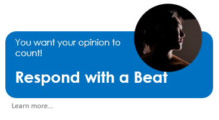

<div style="display: flex; flex-direction: row; justify-content: space-between;" >
  
  
</div>


<div [ngClass]="{mobileStyleCenterText:isHandset}" style=" font-family: 'Roboto', sans-serif; display: flex;justify-content: center; color: #0096FF; font-weight: 500;font-size: 22px">
  Is your opinion informed, a guess or your gut?
  You will be either lucky or wrong

</div>

<div [ngClass]="{mobileStyleBottomContent:isHandset}" style="display: flex;justify-content: center;">
  
  
  
</div>

<a routerLink="/menu/languageOfPulse" >Menu</a>
